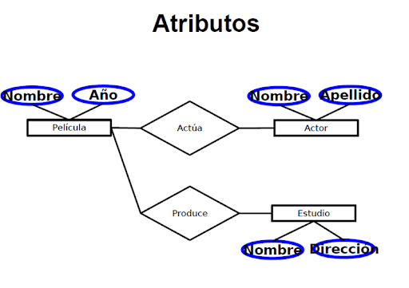

TABLA UNA ENTIDAD - RELACION
Esquema simple de una relación entre dos entidades y sus cardinalidades.
Además de los grados, las relaciones pueden tener distintos tipos de correspondencia: de 1:1 (a cada ocurrencia de una entidad le corresponde como máximo una ocurrencia de otra entidad), de 1:N (a cada ocurrencia de la primera entidad le pueden corresponder varias de la segunda entidad), y N:M (a cada ocurrencia de una entidad le pueden corresponder varias de la otra entidad relacionada y viceversa).
¿QUE ES EL MODELO ENTIDAD RELACION?
El modelo entidad relación o ERD, corresponde a la segunda fase de la creación de una base de datos. Es un diagrama de flujo que representa de manera simplificada cómo las personas, objetos y conceptos se relacionan entre sí.
¿QUE ES UN CAMPO?
Los campos son los componentes que proporcionan la estructura a una tabla. No es posible tener una tabla sin campos. Por ejemplo, puede crear una tabla vacía que tenga definidos los campos pero ninguna fila (registros).
En las bases de datos, se utilizan campos para mantener las relaciones entre las tablas. Se realiza creando campos coincidentes en dos o más tablas. Por ejemplo, si almacenara una tabla llamada almacén_juguetes en una base de datos y también almacena una tabla de personal para realizar el rastreo de los empleados en cada almacén, crearía un campo común entre las dos tablas que se rellenaría, por ejemplo, con un Id. de almacén. El valor del identificador de almacén para un almacén de juguetes concreto sería el mismo en ambas tablas.
A continuación, se ha agregado un campo STORE_ID a la tabla almacén_juguetes:

Se muestra la tabla almacén_juguetes con el campo STORE_ID.
La tabla almacén_juguetes se vincula a una tabla de empleados mediante el Id. de almacén. La tabla siguiente muestra a tres empleados de The Play House:

La tabla de empleados está vinculada a la tabla almacén_juguetes mediante el campo STORE_ID .
¿QUE ES ATRIBUTOS?

Las propiedades particulares de los tipos de entidad se denominan atributos. Los atributos contienen valores que describen cada instancia de la entidad y representan la parte principal de los datos almacenados en la base de datos.
Los atributos son características o rasgos que describen una persona, una organización, un lugar o un elemento. Los atributos comunes incluyen información como nombres, direcciones, números de teléfono, números de tarjeta de crédito, números de identificación fiscal y números de licencia.
El sistema es compatible con las clases siguientes de atributos: